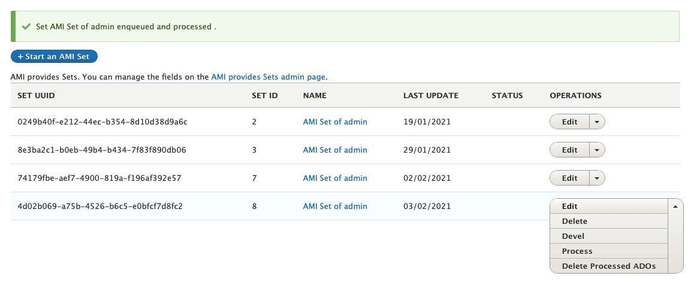

Spreadsheet Formatting Overview
There are multiple ways a spreadsheet/CSV file can be structured to work with AMI, depending on the data transformation and mapping you will be using.
- For most standard AMI ingests, each Row of your spreadsheet/CSV will correspond to a single Digital Object or Collection.
-
Columns in your spreadsheet/CSV can be mapped to different data (files) and metadata elements (label, description, subjects, etc.).
-
It is recommended that different types of files are placed into separate columns--"images", "documents", "models", "videos", "audios", "text".
- Filepaths can point to remote files, to existing files within your docker container, s3 (or other storage type/location that is accessible to Archipelago), and to paths within zip files.
- Example path for existing file within docker container:
/var/www/html/d8content/myAMIimage.jpg - Example s3 path:
s3://myAMIuploads/myAMIdocument.pdf - Example remote filepath:
https://dogsaregreat.edu/dogs.tiff
- Example path for existing file within docker container:
- Multiple files (of the same type) can be placed in a single cell, separated by a semicolon ( ; ).
- For Digital Objects comprised of multiple types of files, such as an Oral History Interview with an audio file and a PDF transcript file, you can place different file types within different corresponding columns for the same Row.
- It is recommended that filepaths are copied/stored as plain (non hyperlinked) formatted text.
- Filepaths can point to remote files, to existing files within your docker container, s3 (or other storage type/location that is accessible to Archipelago), and to paths within zip files.
-
Every spreadsheet/CSV file should contain the following Columns:
type- the Digital Object or Digital Object Collection Type, such as 'Photograph' or 'Collection'
label- the title of the Digital Object or Collection
- Soft-requirement
node_uuid- this can be empty
- if empty, Archipelago will automatically generate UUIDs
- can be used with existing UUIDs during migrations
-
Recommended Columns:
- Files as defined above
- "images", "documents", "models", "videos", "audios", "text"
- .warc/.wacz files should be placed in a column "upload_associated_warcs"
ismemberofand/orispartof(and/or whatever predicate corresponds with the relationship you are mapping)- these columns can be used to connect related objects using the object-to-object relationship that matches your needs
- these columns can hold 3 types of values
- empty (no value)
- an integer to connect an object to another object's corresponding row in the same spreadsheet/CSV
- Ex: Row 2 corresponds to a Digital Object Collection; for a Digital Object corresponding to Row 3, the 'ismemberof' column contains a value of '2'. The Digital Object in Row 3 would be ingested as a member of the Digital Object Collection in Row 2.
- a UUID to connect with an already ingested object
- Metadata - for all the rich, detailed information associated with your Digital Objects and Collections
- Every Column header will become a JSON Key and each cell a JSON value for that Key
-
You can use direct JSON snippets such as:
- If you have an advanced twig template with the necessary logic, you can place data in cells that can be parsed and structured in various ways (such as multiple values separated by semicolons split accordingly, capitalization of values based on defined patterns, etc.)[{"uri": "http://id.loc.gov/authorities/subjects/sh95008857","label": "Digital libraries"}]
- Files as defined above
Ingesting New Digital Objects using Spreadsheets or Google Sheets
Click to view Instructions
From either the main Content page or the AMI Sets List page, select the 'Start an AMI set' button to begin.
Step 1: Plugin Selection
Select the Plugin type you will be using from the dropdown menu.
- Google Sheets Importer
-
Spreadsheet Importer (if using local CSV file)

*The Remote JSON API Importer and additional remote import source options (for other repository systems) will be covered in separate tutorials following future releases.
Step 2: Operation and Spreadsheet Source Selection
Select 'Create New ADOs' as the Operation you would like to perform.
-
If using Google Sheets Importer:
- Enter the ID of your Google Sheet
- Enter the Cell Range for your Google Sheet

-
If using Spreadsheet Importer:
-
Select 'Choose File' to upload the CSV you will be using.

-
Step 3: Data Transformation Selections
Select the data transformation approach--how your source data will be transformed into ADO (Archipelago Digital Object) Metadata.
-
You will have 3 options for your data transformation approach:
- Direct
- Columns from your spreadsheet source will be cast directly to ADO metadata (JSON), without transformation/further processing (only intended for use with simple data strings).
- Custom (Expert Mode)
- Provides very granular custom data transformation and mapping options
- Needs to be used if importing Digital Objects and Digital Object Collections at the same time/from same spreadsheet source (see separate instructions below).
- Template
- Columns from your spreadsheet source will be cast to ADO metadata (JSON) using a Twig template setup for JSON output.
- Direct
-
You will also need to Select which columns contain filenames, entities or URLS where files can be fetched from. Select what columns correspond to the Digital Object types found in your spreadsheet source.
-
Lastly, for this step, you will need to select the destination Fields and Bundles for your New ADOs. If your spreadsheet source only contains Digital Objects, select
Strawberry (Descriptive Metadata source) for Digital Object-
If using Sheet 1 of the Demo AMI Ingest set (found above):
- Select
Templateand use the AMI Ingest JSON template that corresponds with your metadata elements. - Select
images,documents, andaudiosfor the file source/fetching.

- Select
-
Step 4: Global ADO Mappings
Select your global ADO mappings.
- Even if empty (no values), select
node_uuidand any relationship predicate columns (such asismemberof). - By default, the option to automatically assigns UUIDs is selected. If you have existing UUIds, unselect this option.
- Select the corresponding Columns for the Required ADO mappings.
-
If using Sheet 1 of the Demo AMI Ingest set (found above):
- Select both
ismemberofandnode_uuidfor ADO Parent columns - Keep 'Automatically assign UUID' checked
- Do not select any column for 'Sequence'
-
Select the
labelcolumn for ADO Label
- Select both
Step 5: ZIP upload
Provide an optional ZIP file containing your assets.
- You may choose to upload a ZIP file containing all or some of the corresponding files specified in your csv/spreadsheet.
-
The file upload size restrictions specified in your Archipelago instance will apply here (512MB maximum by default).

-
Please note, when creating your ZIP file (in particular, within an OSX environment): only select the folders and files needed, not the top/enclosing folder they are in.
Click to view screenshot of example ZIP file creation in OSX

Step 6: AMI Set Confirmation
You will now see a message letting you know that 'Your source data was saved and is available as a CSV at linktotheAMIgenerated.csv
The message will also let you know that your New AMI Set was created and provide a link to the AMI Set page.

Step 7: AMI Set Processing
Your newly created AMI Set will now need to be Processed.
If you clicked on the 'see it here' link in Step 6, you will be brought to the AMI Set page for review. From this page you can review the JSON configuration for your set (determined by your selections in the preceeding steps).

To Process this set, navigate to the Process tab. You will have two options related to the Processing outcome for your AMI Set.
- Option 1: Select the "Desired ADOS Statuses After Process" for both Digital Objects (and Digital Object Collections, if also part of your ingest).
- The Statuses you have available will reflect the publication workflow/moderation states (such as Draft, Published, Archived/Unpublished) setup in your Archipelago instance, and the permissions associated your user account.
- Option 2: You may choose to check the option to 'Enqueue but do not process Batch' to place the AMI set in the Queue to Process. For the AMI version shipped with Archipelago 1.0.0-RC3, the option to 'Enqueue' for scheduled/future Processing should only be used if the Queue operations for your Archipelago instance are configured. Please return to this page for updated Enqueueing instructions that will accompany future releases.
-
Select
Confirmto continue.
You may also select Process from the Operations menu for the AMI set from the main AMI sets page.

If you chose to 'Confirm" and Process your AMI Set immediately, proceed to Step 9: Processing and ADO Creation.
Step 8: Queue Manager (if not Processing immediately)
If you chose to place your AMI set in the Queue to Process in step 7, you may need to navigate to the Queue Manager found at /admin/config/system/queue-ui. (Be sure to select the Queue Manager under the System section, not the Queue Manager for Hydroponic Service under the Archipelago section). If the Queue operations for your Archipelago instance have been configured, you can simply leave your AMI Set in the Queue for Processing on the preconfigured schedule.

To Process your AMI Set immediately from the Queue Manager page, select the checkbox next to the 'AMI Digital Object Ingester Queue Worker'. Keep the Action menu set to Batch Process and click the Apply to selected items button.

Step 9: Processing and ADO Creation
Your AMI set will now be Processed. You can follow the set's progress through the Processing queues loading screen.

After your AMI set is Processed, you will receive confirmation messages letting you know your Digital Objects were successfully created.

From this message, you can click on each ADO title to review the new created Digital Object (or Collection) if you wish. Or, you may proceed to step 10.
Step 10: Review your newly created Digital Objects
Return to the main Content page found at /admin/content and review your newly created Digital Objects. After ensuring that files and metadata elements were mapped correctly, you may choose to change the Status for your Digital Objects to 'Published'. Celebrate your AMI success with a fresh coffee, tea, or cookie!
Thank you for reading! Please contact us on our Archipelago Commons Google Group with any questions or feedback.
Return to the Archipelago Documentation main page.